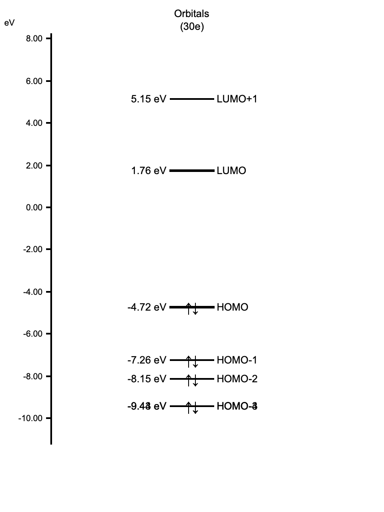

(Calculation Level: B3LYP/STO-3G)
Visualize the π-electron system molecular orbitals of 1,3-butadiene and verify the regularity that the number of "Nodes" increases as the energy level rises.
Extensions > PySCF Calculator.Calculation tab.Geometry Optimization.RKS (Restricted Kohn-Sham).b3lyp.sto-3g (Minimal basis set for speed).Run Calculation button to start the calculation.
Wait for the calculation to finish. The status bar will indicate completion, and the
Post-Calculation Analysis area at the bottom will become active.
Pro Tip: Click the Orbital Energy Diagram button to open an interactive dialog. This is very useful for checking energy gaps (HOMO-LUMO gap) and selecting orbitals directly from the diagram.
Generate & Visualize Selected button..cube files. This may take a few seconds.
.cube extension appear in
the Visualization Files list.Select each file from the Visualization Files list to view the shape. Notice how the number
of "nodes" (change in phase/color) increases with energy.
Tip: If you need to restart, select File > New from the menu
bar to reset the canvas.